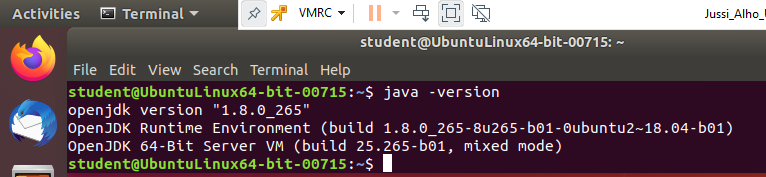
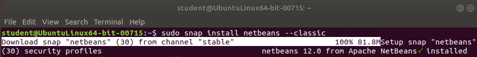

Kuten useimmat ohjelmat, myös NetBeans voidaan asentaa Linuxille monella eri tavalla sekä terminaalista että sovelluskirjastosta. Itse asensin ohjelman suoraan terminaalista, jonka senkin voi tehdä monella eri tavalla. Valitsemani asennustapa osoittautui lopulta varsin yksinkertaiseksi ja toimivaksi, vaikka siinä olikin muutama huomioonotettava asia. NetBeans vaatii toimiakseen Javan ajo- ja kehitysympäristön (JDK & JRE), joista tämäkin asennusohje aloitetaan
Uusin NetBeans vaatii toimiakseen vähintään Javan version 8, jonka itsekin asensin. Asensin aluksi uusimman Java 11:n, mutta sen yhteensopivuudessa NetBeansin kanssa oli sen verran ongelmia, että päätin vaihtaa Java-versioon 8.
Aloitetaan asennus avaamalla Ubuntun Terminal, eli komentorivi, hakemalla se sovellusvalikosta tai näppäimistön pikakomennolla
Ctrl + Alt + T.
Päivitetään pakettilista komennolla
Asennetaan Javan OpenJDK8-paketti kirjoittamalla
Varmistetaan asennuksen onnistuminen kirjoittamalla komento, joka näyttää Javan version:
Tuloksen pitäisi olla suurinpiirtein seuraavanlainen:
Asennushetkellä uusin NetBeans-versio oli 12.0. Se voidaan asentaa Linuxin terminaalistakin monella tavalla, mutta todennäköisesti helpoin tapa on käyttää snap-paketointijärjestelmää, minkä mukaan tämä ohjekin on tehty.
Ladataan ja asennetaan NetBeansin snap -paketti kirjoittamalla komento
(Kestää jonkin aikaa, riippuen verkkoyhteyden nopeudesta...)
Jos kaikki meni kuten piti, pitäisi näytölle ilmestyä seuraavanlainen teksti:
Onneksi olkoon, olet asentanut NetBeans IDE:n onnistuneesti Ubuntullesi.
NetBeansi IDE:ä voidaan konfiguroida monella tavalla joko komentoriviltä parametreina käynnistyksen yhteydessä tai muokkaamalla konfigurointitiedostoa. Valinnat määritellään netbeans.conf -tiedostossa, joka toimiteaan NetBeans-jakelun mukana.
Linuxilla tämä tiedosto löytyy NetBeansin asennushakemistosta
<NetBeans asennushakemisto>/etc/netbeans.conf. Minun tapauksessani NetBeans asennettiin juurihakemistoon, joten polku konfigurointitiedostoon on /etc/netbeans.conf.
Tiedosto on yksinkertainen tekstitiedosto, joka voidaan avata katsottavaksi ja muokattavaksi millä tahansa tekstieditorilla, esim. Nanolla. Katsotaan seuraavaksi tuon tiedoston sisältöä ja muokkausvaihtoehtoja.